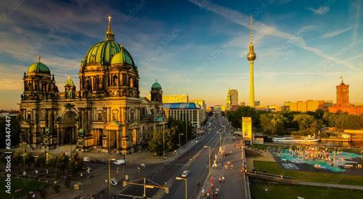

Берлін

Коротка характеристика
Берлін — столиця Німеччини та одне з найбільших міст Європи. Він поєднує сучасне мистецтво, насичене минуле, зелені парки й розвинену інфраструктуру.
Пояснення особистого вибору
Я обрав Берлін, бо це приклад міста, яке змогло пережити складну історію та перетворитися на відкритий міжнародний культурний центр.
Цікаві факти
- Берлін є федеральною землею Німеччини одночасно з містом.
- У місті більше мостів, ніж у Венеції.
- Берлінський мур упав у 1989 році та став символом об'єднання країни.
Визначні місця
Бранденбурзькі ворота, Рейхстаг, Музейний острів, Берлінська телевежа, Меморіал Берлінського муру та Александерплац.
Особиста оцінка
Берлін здається вільним і динамічним містом, де історичні пам'ятки органічно сусідять із сучасними районами.